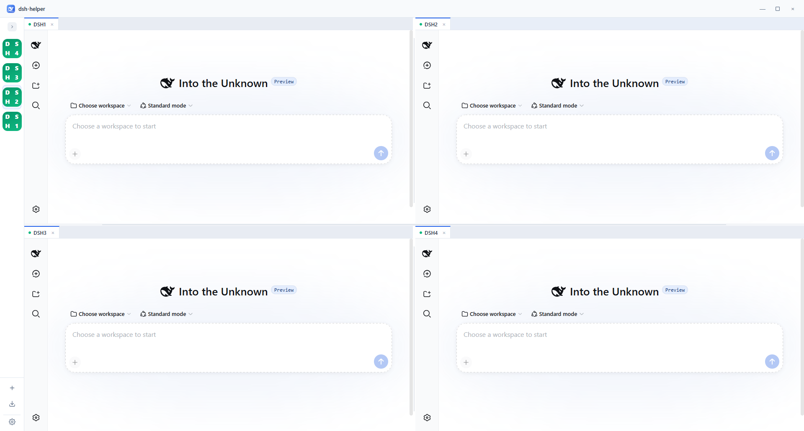

<!-- Banner source (EN). Canonical copy is inlined on /index.html -->
<article class="banner-dsh-helper">
  <div class="banner-dsh-helper__inner">
    <div class="banner-dsh-helper__copy">
      <p class="banner-dsh-helper__eyebrow">
        
        DeepSeek Harness · Desktop companion
      </p>
      <h1 class="banner-dsh-helper__title">Many instances.<br />One desktop.</h1>
      <p class="banner-dsh-helper__lede">
        DSHHelper runs multiple isolated DeepSeek Harness workspaces on one machine — built-in
        runtime, quad-pane layout, and shareable <code>.dshpack</code> packages you can ship to a team.
      </p>
      <ul class="banner-dsh-helper__tags">
        <li>Multi-instance</li>
        <li>Built-in runtime</li>
        <li>.dshpack</li>
      </ul>
      <p class="banner-dsh-helper__cta">Explore DSHHelper <span aria-hidden="true">→</span></p>
    </div>
    <div class="banner-dsh-helper__visual">
      
    </div>
  </div>
</article>
